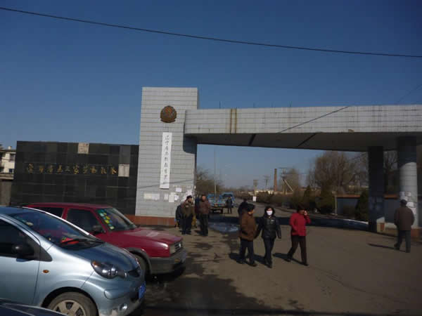
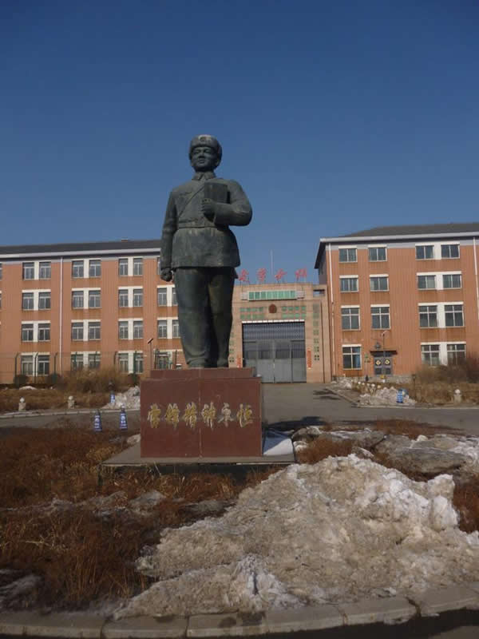
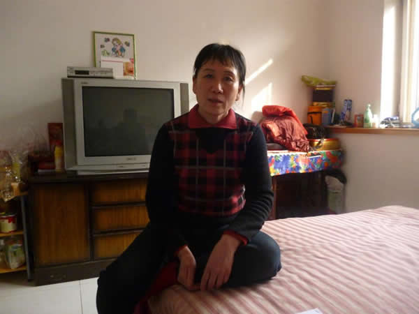
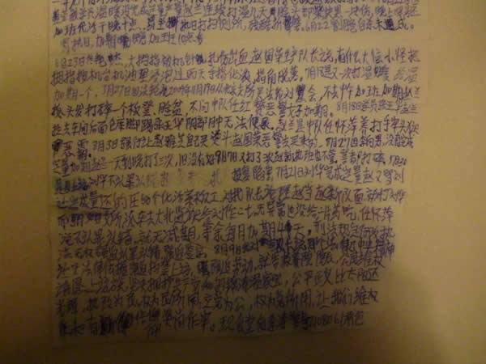
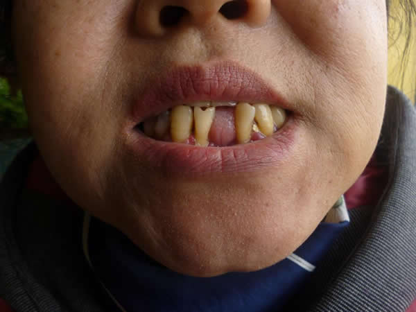
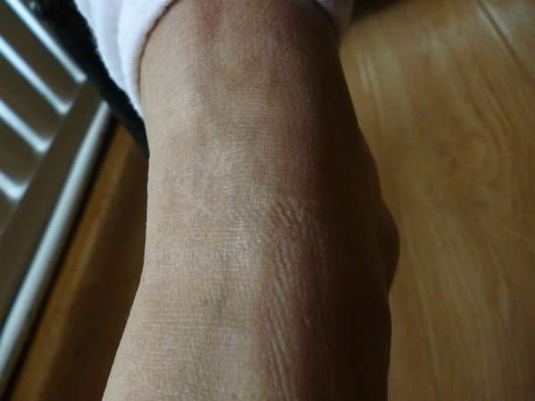
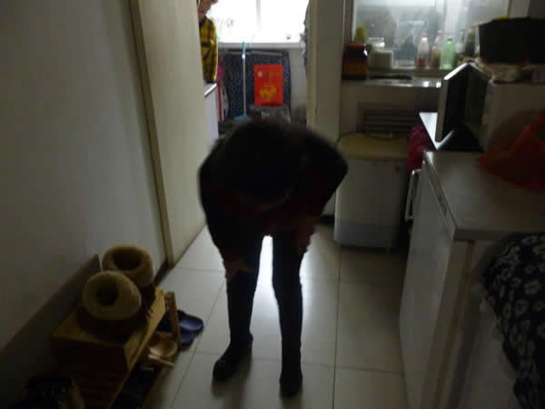
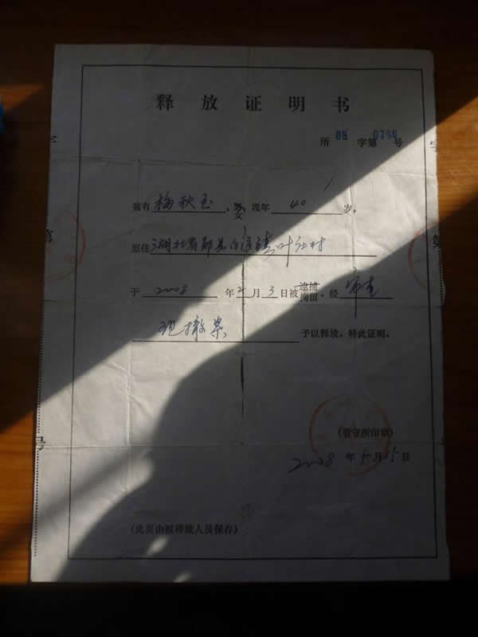
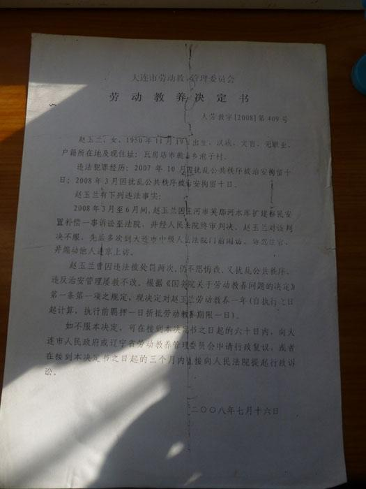
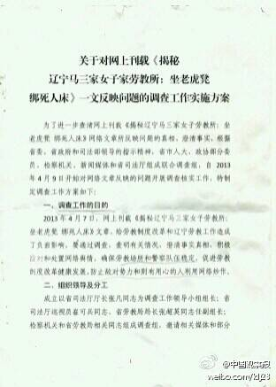

最近一周，关于“马三家女子劳教所”的事情在网上引发广泛关注。本周转载一些相关的评论和照片，让大伙儿了解一下党国鼓吹的和谐社会，背后是怎样的阴暗和恐怖。
马三家女子劳教所的曝光，首先得感谢《Lens 视觉杂志》和勇敢的记者【袁凌】。
这篇2万字的长篇报道在《Lens 视觉杂志》的官方网站刊登不久，就被和谐掉了。国内有多家网站和媒体转载了这篇文章，可惜大多没逃过河蟹的钳子。
俺把全文转载如下，算是留个备份。希望大伙儿能耐心看完这篇长篇报道。然后你对党国构建的“和谐社会”，必有更深刻的认识。
《揭秘辽宁马三家女子劳教所 @ Lens 视觉杂志》
然后再贴出这篇报道的相关照片（由 LENS 记者袁凌拍摄）

（马三家劳教所的大门 大门上挂着“思想教育学校”的牌子）

（雷锋雕像下面写着“雷锋精神永恒”——真是莫大讽刺）

（盖凤珍述说“上大挂”和“关小号”的经历）

（刘华的《劳教日记》，写于防雨布上，藏匿于阴道内带出）

（赵敏的门牙。在“死人床”上灌食被抹布塞掉）

（赵敏的小腿，带有坐“老虎凳”留下的铐痕）

（在劳教所里，李平的三级残疾加重为二级）

（梅秋玉的撤案证明书。梅秋玉被释放当天立即就被关进劳教所）

（没有公章的劳教决定书）
下面转贴几篇相关的评论文章（原文需翻墙才能打开）。
《女子劳教所虐囚日记震惊中国 @ 纽约时报》
《艾晓明：阴道在咆哮——直面“马三家” @ 中国人权双周刊》
此事曝光后，朝廷一方面抓紧网上删贴，另一方面也做出姿态，号称要派调查组彻查此事。
那么，官方的调查组靠谱吗？对这个问题，其实你用膝盖想一下，就明白是不可能靠谱滴。
先看这张截图，图片比较小，帮大伙儿念一下。
标题是：关于对网上刊载《解密辽宁马三家女子劳教所：坐老虎凳绑死人床》一文反映问题的调查工作实施方案
第一段是“关于调查工作的目的”，里面有一句：

再看这张
这就是调查组的组长，原先就是马三家教养院的院长。搞笑吧？
另外，辽宁警方已经开始上门恐吓那些爆料的被劳教人员，请看如下报道：
《揭马三家劳教真相 李文娟遭警察砸门威吓 @ 美国之音》
“劳教”的手续很简单，也无需经过法院审理。公安机关想关你，随便找个借口都可以把你丢到劳教所里面。比如前面那张照片里，“劳教决定书”连公章都不用盖，其随意性可见一斑。
而“判刑”相对比较正规，需要经过法庭审理，有律师介入。
关于劳教的随意性，最典型的大概是【一元劳教案】——当年江苏常州有三个老百姓去北京上访。事后，江苏警方为了“整治”他们，找了个借口说他们乘坐公交车没给一元车费，然后把几个访民送去劳教。
很多网友可能以为劳教是用来对付坏人的，其实不然。
50年代设立劳教制度，关押的主要是【反革命分子】的家属。当年的“反革命”并【不一定】是坏人，其家属就更不一定是坏人了。
到了最近10年，劳教所关押的，相当一部分是上访民众。前面说了，劳教的手续很简单，用来对付上访民众，实在很顺手啊。另外，还有一些有正义感的民众，也被关到劳教所里面。
比如前面提到的“李文娟”。她是税务部门工作人员，举报国税局的领导贪赃枉法。没想到，受理举报的纪检部门直接跟被举报的领导串通。结果捏，被举报的领导继续升官，而李文娟被单位辞退，然后被送到劳教所干了一年苦力。
（李文娟）
最后再附上一篇评论文章：《劳动教养离你有多远？ @ 腾讯新闻》
看完这篇你就明白，劳教对象的范围是【很广】滴，理由也是很【随意】滴——连“无理取闹”、“诽谤他人”、都可以成为劳教的借口。
俺以腾讯那篇文章的最后一段，作为本文的结尾：
俺博客上，和本文相关的帖子（需翻墙）：
《如何理解“英美法系”（普通法系）——从“英国古代史”聊到“香港国安法”》
《每周转载：超级富豪王振华性侵9岁女童（大量网友评论，多图）》
《每周转载：华为李洪元案——工作996、离职251、维权404（大量网友评论，多图）》
《每周转载：聂树斌冤案、死刑犯器官移植（相关报道及网友评论）》
《每周转载：雷洋案第2季——北京检方“不起诉”引发轩然大波》
《每周转载：雷洋案第1季——人大校友离奇死亡引大量网友围观》
《每周转载：关于“浦志强庭审”的各方报道和网友评论》
《每周转载：710事件——全国性维权律师大抓捕（外媒报道及网友评论）》
《每周转载：辽宁交警执法，司机死在派出所，地方衙门称其“身体发生异样”》
《每周转载：大量网友围观庆安命案，并质疑 CCAV 视频（多图）》
《每周转载：网民围观长沙警方，区伯收到艳照要挟》
《每周转载：关于区伯“被嫖娼”事件的相关报道和网友评论》
《每周转载：网友热议“寻衅滋事”和“泄漏国家机密”的罪名》
《每周转载：汇总未成年人被性侵被嫖宿的案件（38起，附图）》
★“马三家”的曝光
马三家女子劳教所的曝光，首先得感谢《Lens 视觉杂志》和勇敢的记者【袁凌】。
这篇2万字的长篇报道在《Lens 视觉杂志》的官方网站刊登不久，就被和谐掉了。国内有多家网站和媒体转载了这篇文章，可惜大多没逃过河蟹的钳子。
俺把全文转载如下，算是留个备份。希望大伙儿能耐心看完这篇长篇报道。然后你对党国构建的“和谐社会”，必有更深刻的认识。
廉价劳作、体罚、蹲小号、被电击、上“大挂”、坐“老虎凳”、缚“死人床”……通过劳教人员讲述、相关物证、文字材料、诉讼文书和知情人士的叙述，此文试图还原一座女子劳教所内的真实生态，为时下的劳教制度破冰立此存照。
走出“马三家”
2013年2月初，一位新近解除劳动教养的女访民找到大连人王振，交给他一封用蝇头小字写在皱巴巴纸上的“呼吁书”。这是一封从劳教所发出的要求废除劳教公
开信，签名者中包括王振的妻子刘玉玲。刘玉玲2012年8月被判劳教，眼下仍在辽宁马三家女子劳动教养所里羁押。
这位女访民告诉王振，“呼吁书”是她包在裹紧的小塑料卷内，藏在阴道里带出劳教所大门的。
这个情节，像是一年多前王桂兰经历的回放。
2011年9月，62岁的王桂兰走出了马三家女子劳教所的铁门。出门之前，她的身体经过了搜检，防止夹带违规物品。无人想到，王桂兰在阴道内藏匿了一卷同宿舍学员刘华写的《劳教日记》。“过关”之后，她一身冷汗。
这份写于防雨绸上的日记字体密麻，依稀可辨以下几天的记载（括弧内为补正错讹）：
2011年6月22日
因盗(入所)劳教学员温暖没完成定量产量，赵兰(注：从学员中选拔的带班人员)连续打温几天，脸头部柴块黑一块伤，晚上回号加班代活干(到)晚10点，罚坐(做)执(值)日打扫厕所，残酷折磨。6月22日割腕自杀未成。罚执(值)日，加期，晚加班(到)10点多。
2011年8月18日
学员张亚华(被)赵兰拉去车间后面仓库脚踢，张亚华阴部肿，无法便尿。
……
此前一年，马三家劳教人员陆秀娟用棉大衣空白商标布缝成的小本子上，如此记录自己“上大挂”的经历(这本日记被藏在挖空的肥皂中带出劳教所)：
走到一个空屋里张拿出她早以(已)准备好的手铐，把我的右手铐在右边的两层床的顶干(杆)上，把我的左手铐在左边底层干(杆)下，把我的两只手扣在两张床的中间，她用脚很(狠)踹床一下，把我坤(抻)在两张床的中间，当时我的双臂坤(抻)得特别疼，当时古(骨)头就像散了架子，坤(抻)我长达6个多小时，从早8点多坤(抻)到下午2点多钟，我被坤(抻得)昏死过去，等我醒来时我的脑袋特别疼，麻木，嘴里都是药味……
从马三家女子劳教所里走出来的上访者们，对此都不陌生。劳教所里的经历，加添了她们自认为遭到的不公，从走出马三家大门的第一天起，就开始再次上访，并面临再次“入门”的风险，多数人不免“二进宫”。和那些秘密的证物一块带出来的，还有身体上难以褪去的印痕。
2013年2月的一天，北京南郊东高地的一处民宅里，几位从马三家走出的上访者们做了顿“团圆饭”。其中两名残疾人的拐杖倚在门边，在客厅和厨房之间，她们近90度地弓着肩背，一步一步挪动。门牙松动，桌上稍有嚼头的菜肴都剩下了。为遮丑染过的头发之下，所有人的发根都已花白。难得一聚的几位“学友”背后，是望不到头的一长串名字：刘华、陆秀娟、朱桂芹、赵敏、王桂兰、梅秋玉、王玉萍、郝威、盖凤珍、李平、胡秀芬、曲华松，以及尚未走出劳教所的刘玉玲……
直到2013年初，中央政法工作会议上传出消息，年内停止劳教制度，以及对上访者不再批准劳教，她们才看到了彻底走出马三家的希望。但马三家仍在接收劳教人员的事实，以及尚在劳教所中羁押的同伴的境遇，却使她们心有余悸。
马三家女子劳教所，是辽宁全省女性教养人员集中羁押的地方。个中情形，远非“劳动教养”四字所能传达。
她们在高墙内的生活轨迹，借助记忆、身体创痕和以各种方式带出的物证，加上部分诉讼文书、律师笔录，以及知情者的证言，约略得以还原。
入院
2007年8月初，王玉萍在拘留所关押十天后被送进了劳教所，当时她患有子宫肌瘤，裤裆和留到腰际的头发都被出血浸透了。入所时要体检，王玉萍自述扶着墙勉强接了尿，医生眼皮不搭就说这是尿，“我说这是血啊不是尿，她就说‘扔了’！”
按照公安部1982年发布的《劳动教养试行办法》，严重病患或丧失劳动能力者，劳教院不能接收。锦州医学院附属一院在2007年3月出具的一份诊断书显示，王玉萍身患重度贫血、子宫肌瘤，需要输血。但王玉萍仍旧被送进了马三家。入院之后，由于无钱，劳教院没有为其治病。十天中，下身流血不止的王玉萍被要求每天出工干活，给棉衣打包，一个心肠好的队长吩咐学员找来破棉花垫在她身下。一直等到丈夫卖了父母的房凑够了钱，王玉萍才被送进医院动手术。
朱桂芹是抚顺人，1998年曾患结核性脑膜炎，留下脑梗等后遗症。因为哥哥朱传清在劳教期间遭殴打造成重度脑外伤致残，朱桂芹多年上访，于2004年4月16日被押入马三家。入所时没有检查身体。
2003年6月底，抚顺市劳动能力鉴定委员会专家组曾对朱桂芹做出鉴定，认定她患部分丧失劳动能力一年。此时距这份鉴定表的时限还有两个月。但朱桂芹仍被分配到了劳教所二大队。当她提出“身体有病，有丧失劳动能力证明”，随即遭到了体罚。
身患疾病或者残疾之下“入院”的，还有盖凤珍、高凤兰和李平。三人都持有残联颁发的肢体残疾人证书。盖凤珍由于在看守所里绝食导致血红蛋白很低，高凤兰切除了半边肺叶，李平则因风湿性关节炎下肢麻木，但三人都未经过体检被送进了马三家。李平拿出残疾证，管教说“认公安不认残联”。
马三家劳教院内部人士肖溪(化名)称，按规定收的人必须身体健康。但近年来聋哑人也收（大多是参与盗窃），高血压到200多的也往里送，“我们压力很大。关键是维稳压力，公安机关非要往这里送”。在劳教人员的讲述中，甚至有公安局为了将有病的上访者成功送进劳教院而送钱的情节。
为了顺利送上访者入院，公安机关颇费心思。经过艰苦说服，绝食的盖凤珍在看守所的释放证明上签了字，但释放证明上随即被写上了“转教养”字样。进了劳教院之后，她才拿到了自己的拘留释放证。李平则是被告知到处理医疗事故的卫生局领取45万元赔偿，警察穿着便衣开普通小车直接拉到马三家劳教院。到了门口，李平得到了一张教养决定书。
现行劳教体制下，决定劳动教养的权力实际掌握在公安部门法制办，由司法部门管辖的劳教所只负责执行，并无动力细究其程序。刘玉玲于2012年8月13日从国家信访局门口被大连市公安人员送往马三家，她收到的劳教决定书日期却是7月30日。一些传销者以及公安机关为完成指标“凑数”的，往往劳教决定书也是事后补齐，甚至未加盖公章。在上访人员的解除劳教出院书上，绝大多数也没有编号。
湖北女子梅秋玉“入院”的心情和别人有异。因早年婚姻破裂，梅秋玉远赴东北，却遭遇强制引产。2008年1月底，因为上访中小孩高烧无人理会，梅秋玉在国家信访局门口爬上一棵大树，随即被带回大连刑拘。5月15日，梅秋玉从大连看守所上着背铐，由四人押送到马三家。“别人到马三家都是哆嗦，我是噌一下跑进去了。”这是因为，在看守所里备受折磨的她，看到这里漂亮干净的楼房、大院里矗立的雷锋像，以及马三家镇路口国徽下“辽宁省思想教育学校”的招牌，“以为进了那个大门我逃了一条活路”。梅秋玉说。
但闪闪发光的大铁门后面的经历，并不符合她的想象。
进门第一步是搜身。下岗女工李平被“四个吸毒的按地上，把头发先铰了。脱光衣服检查有没有凶器。简直蒙了，没见过这阵势”。李平不服，提出自己没有在劳教决定书上签字。“管教说，你进来就是罪犯，别管你是谁，公安局送来你就是罪犯，至于什么手续和我们没关系。”
大连人郝威以前是做美术的，由于一套未能按期交付的房产，她从雕塑家变成了劳教人员。入院之初，她保留着写诗的习惯，很快纸笔和书本被没收了。她意识到这里需要的是服从和恐惧。“第一次看他们全副武装带上警棍的时候，我眼泪都下来了。身上背着警棍、报警器、手铐，我就想你是人民警察吗？这些女人犯了多大的错啊？”
“劳教的对象变了。过去送来的真是狠角色，现在是弱势群体、上访的和搞传销的大学生，看上去可怜，有工作的弄成没工作了，有前途的在染缸里毁了，背上了不名誉的前科。”肖溪说。
劳教所的楼房是2000年新建的，看上去宽敞明亮。宿舍是架子床，每舍20人左右，比之以往的小平房、稻草土炕、烧苞米杆取暖，硬件大为改善。但宿舍里叠得方方正正的被褥，用于外界检查参观，晚上并不能打开来睡觉，被劳教人员们称作“假象被”。真正盖的被褥每天早上打包放在仓库，晚上取来。
肖溪介绍，劳教所供暖经费不足，冬天暖气不热。规定一个月洗一次澡，但安装的太阳能热水器只有夏天能提供热水浴，其他时间用冷水擦身，女学员大都患上了痛经。直到最近才给了女学员擦洗用的热水。
更成问题的是伙食和医疗。
公安部《劳动教养试行办法》和司法部条令规定，劳教人员的伙食和医疗由国家承担，劳动教养人员的口粮、副食品按照当地国营企业同工种定量标准供应。近年实行了经费人头包干制，要求劳教人员生活不得低于当地最低水准，辽宁省是每个劳教人员每月伙食费160元，这笔钱并不足以吃上过得去的伙食。
主食是两顿窝头一顿米饭，有一阶段有混合面的馒头。菜就是煮白菜萝卜。中午的米饭总是煮得不熟，剩下来掺上水，做第二天早上的稀饭，往往都没有煮热，窝头也发凉。只有晚上的窝窝头和菜汤是热的，被称为“救命的一顿”。梅秋玉说，伙食牌子上写的标准是有荤腥，“实际什么也没有”，只有过年吃一顿小饺子，星期天有很小一片咸鱼。上访人员梅秋玉、陆秀娟、赵敏等人被编入“特管队”期间，伙食更差，九个人只有一小盆大头菜，主食只有窝头。由于维生素和盐分严重缺乏，几个人都患上了严重的灰指甲，向管教队长申请买咸菜，也没获允许。
2013年初，王振在探望妻子刘玉玲时得知，在订单空档期，她们的伙食减为一天两顿。
劳教人员家属送的钱由所里统一管理，每个劳教人员有一个户头，凭卡支取购买零食日用品。劳教所里开有小卖部，价格奇贵，一块劣质肥皂卖到5块钱，一个鸡蛋两块钱。近来在司法部一再严令下，在大楼底层开办了明码标价的平价商店，但据劳教人员说是摆货应付检查，真正卖货是在另外的小卖部，仍旧是价格奇贵。一位业内人士对此的解释是，“这好比飞机场，顾客是特定的，东西的价格总要贵一些”。由于劳动量大，油水薄，明知价格贵，不少劳教人员也不得不购买补充营养，家中无人送钱的就只能硬熬了。
亲情餐也是高消费的一种。劳教条例规定，家人探望可以在食堂与劳教人员一同吃饭。相比起正规的接见，这种方式限制较少，因此家属和律师会见往往采取此种做法。但亲情餐的价格，却量少质次价高。贾凤芹回忆，每次丈夫和女儿探望她，点两三个菜就要花100多元。
看病是劳教人员的大宗支出。按照国务院规定，劳教人员的医药费由劳教院全部负担，但实际上，马三家劳教所里都是学员自己付费。陆秀娟保留的卫生所和劳教院医院药费单据显示，从100元一次的B超到2元钱的西药费，都要当场支付，还要收取10元一次的注射费等。此外，还有一张2008年11月26日由管教队长陈秋梅草拟、陆秀娟签字的“一大队三分队陆秀娟欠药费”的欠条。在陆秀娟的劳教日记中，只有一次她从值班的一位周队长处得到了几片祛痛片。
卫生所和劳教院附属医院的设施简陋，碰到需要动手术或转院治疗的严重病情，劳教人员的负担更为沉重。马三家劳教院原副院长彭代铭介绍，遇到劳教人员重病，一般是办个院外就医，自己回家治了事。
这对于劳教人员已是一种幸运。李平入院之前是三级肢残人，患有风湿性关节炎，需要终身服药维持。由于在劳教所里没有条件就医，阻断了治疗，解教时她的残疾程度变成了二级，无法伸直肩背走路。刘玉玲2013年1月从劳教所带出的求救信中，提及了一个患有子宫肌瘤的劳教人员陈丽，肌瘤直径由入院时的4厘米增长到10厘米，仍旧未能院外就医。
劳教条例规定孕妇不得劳教。刘玉玲自2012年8月进所之后，一直反映自己怀有身孕，腹部增大。在家人接见时拍的照片上，解开裤带的刘玉玲大腹便便。刘玉玲三次到马三家劳教院医院接受B超检查，皆被诊断为未怀孕。但刘玉玲自述婴儿胎动明显，日益接近预产期，强烈要求转院检查，却一直未得允许，至今仍在劳教院羁押，上车间劳动和起居都要两个同伴扶持。
干活
王玉萍入院时赶上了订单高峰期。
她坐在染血的旧棉花上铰扣眼，“每天要做800条棉裤，还要打包。一天20个小时在车间”。王玉萍睡觉不脱衣服、不洗脸洗脚，“留着劲儿干活去”。
刘华的《劳教日记》记载，二大队三个分队，打包车间20人，裁剪车间16人，扎花车间50人，车间做服装50人。女所2010年做大衣16万件，裤子3万件，其他工作服2万件，广州石狮裤子订单5000条，一共22万件。
2011年2月23日至5月20日，女所劳教工厂做了3万件套装。6月1日至8月20日，为深圳杰尼丹服饰公司加工10万件羽绒服，包括从身高1.60米至1.90米各种款型。刘华的《上访日记》即取材于做内胆的防雨布下脚料。8月23日至年底共做套装4万件。
贾凤芹是凌源针织厂退休工人，2004年被劳教，她发现里面的工作强度远超针织厂。“最低10小时，一般12小时到14小时连轴转。”早上5点起床，排队出工，从6点半干到11点半，下午从12点半干到17点。如果遇上赶工期加班，就说不准了，据肖溪透露，时间可能会超过午夜12点直至一两点。司法部劳教局规定，劳教人员劳动每天不得超过六小时，因季节、工期等特殊原因加班需经劳动和教育部门审核，每天最多不超两小时。流水作业，手脚慢影响了下道工序，就面临罚款、体罚、加期。
车间任务量包干，当天必须赶出来。刘华干的是画线、铰线头的轻活，还要给领袖配号。“我一天要过手1800件到2000件。还要拿熨斗熨衣服，一天要熨3000件的衣服。”缝制成衣的人，任务量是320件。《上访日记》记载，2010年7月20日，刘华完成定量后，带班（从劳教人员中选拔的生产管理者）要求刘华再加50件案板工，刘找值班队长评理，被带班当着干警的面打伤，此后去大北监狱医院做了CT。梅秋玉由于引产后遗症身体不好，完不成分派的任务量，值班队长让她选择熬夜完成任务还是罚站。梅秋玉说选罚站，被队长推倒在地，用高跟鞋踩住小腿转了一圈，踩出一个洞，溃烂几个月才复原。至今，梅秋玉小腿上的疤痕清晰可见。
没有周六的学习或休息，常常也没有周日和节假日。陆秀娟印象最深的是，2005年三八妇女节，就要解教的她和同伴们上了一整天又加了一个通宵的班，后来她就在工位上迷糊了。干活干到迷糊是寻常现象。王桂兰本身是开成衣铺的，车间的活儿比较内行，动作比别人快，还能指导别人和修理机器。但是她年过六十，好几次干着就睡着在机台上了。王桂兰由于有技术，不会受到惩罚，但一般学员可能被带班的按在案板上，用一根铁板尺抽打头背。刘华称，一个叫王素芝的学员，因为做军大衣熨口袋不过关，被带班把脑袋按在案板上用拳头打，人被打傻了，来例假不知收拾顺腿流，后来被医院诊断为精神错乱。
为了保证干活时间，防止借故怠工，车间的厕所也被锁起来，一天只准上三次，这成了劳教人员和带班、值班队长之间冲突的诱因之一。
生病不是免于劳动的理由。贾凤芹保留的劳教所卫生所注射通知单显示，她因为“昏迷待查”和“眩晕待查”输液，得到的优待不过是“照顾劳动不加班一天”，而非休息。
彭代铭回忆，“素质差一点的干警、带班，认为有人装病怠工，你说干不动活也拉过去，到现场待着。”
梅秋玉因为脚被踩伤无法出工，被人抬到车间去，在工位上坐不稳，跪在地上给军大衣画圈，以儆众人。带班的说为梅秋玉“针灸”，用缝纫机针扎她的手指头，后又换成手缝被服的大针，在肩背上乱扎，长期贫血的梅秋玉被扎伤都冒不出血来。
近年来上访人员增多，由于思想上认为自己没有犯错，她们进所之后往往拒绝劳动，也都为此遭到严厉惩罚。肖溪说，这成了近两年干警和劳教人员间最大的冲突。上访者朱桂芹身为残疾人，进所后一直拒绝劳动，结果遭到了长年蹲“小号”、上戒具等严厉惩罚。在女所里，她是少有的一直没有劳动过的人。
超强度劳动是马三家多年的传统。彭代铭回忆，作为分管教育的副院长，他和分管生产的副院长矛盾很大，他想保证教育时间，但课时都被干活挤占了。肖溪称，由于劳教人员干活时间长，干警也无比辛苦，加班加点盯着，“玩命干”。
马三家劳教院地处沈阳市西郊，根据《院志》记载，总面积近3万亩，在多个劳教所和监狱占地之外，还拥有1.5万多亩耕地。直到数年以前，这些耕地全部是由劳教犯耕种，栽种玉米、棉花。此外劳教人员更长年外出做劳务，挖沟修路。“在沈阳街头，那时看到一群群穿黄马甲干苦活的，就是劳教人员。”曾经在司法局处理涉及劳教工作的律师王力成说。女学员则主要做被服和手工艺品。劳教院拥有自己的被服厂、加工厂、机械化养猪场、烧结厂，还有服装公司。《上访日记》中提到的欣誉服装有限公司一分公司，业务联系地址就在马三家劳教院，员工人数标注为5人至10人，实际的工人主要是女所的劳教人员。
高峰时期，马三家的劳教人员超过5000人，无偿劳动产生出庞大的效益。彭代铭说，当时一年外出劳务的收入就过千万元，加上种地和工厂的收入，总产值一年近1亿元。
近年来，国家停止了劳教机构自筹一半经费的政策，保证了从干警到劳教人员的日常经费，干警由事业编制一律改为国家公务员，伙食费、医药费落实到学员个人。但“人头费”的保障，没有取消“劳动”的名义和消除创收动力，超强劳动并无改观。肖溪称，直到最近，废除劳教呼声高涨，上级部门加强了对超时劳动的监督，有时深夜抽查，劳教车间安装了摄像头，劳动时间才有所下降。但王振最近去探望刘玉玲，一天上工九个小时的情形并无改变。
创造了庞大产值的劳教人员，本身却没有劳动报酬，也缺乏劳保措施。彭代铭回忆，他在任时劳教人员干活没有任何报酬。近年来，劳教所开始给予学员一月10元的象征性补贴，这一区区之数仍常遭克扣。
彭代铭一直认为，劳教人员有别于罪犯，他们和普通劳动者一样有权利获得工资。国务院1982年发布的《劳动教养试行办法》规定，劳动教养管理所应当根据劳教人员从事的生产类型、技术高低和生产的数量、质量，发给适当工资。然而在现实中，这一规定形同虚文。上世纪50年代初创时，劳教院归属民政局管理，劳教人员曾经有过工资，但很快成了明日黄花。
相比于真正的罪犯，由于没有劳教法律条款，劳教人员在劳动安全、健康上更无保障。长年的重度劳动使劳教人员普遍患上了脊椎骨质增生和椎间盘突出等疾病，却无从医治。
早年马三家劳教院发生过烧结厂工人意外身亡的事故。彭代铭透露，当时如果在劳动中产生工伤，并不存在赔付，只是提前解除劳教作为交换。现在要解决类似问题，劳教人员作为劳动者的地位仍需明确。相形之下，《监狱法》则明文规定了罪犯劳动受劳动法保护，发生工伤参照国家劳动保险法规处理。
劳教产生的庞大效益，也引发了腐败效应。劳教生产车间的效益无需上缴财政或司法厅，劳教院自身即可支配，却没有财务公开制度。“几千亩地和厂房的租金、车间加工收入，干警没得到福利。” 肖溪说。
2004年，沈阳市城郊检察院办理了马三家劳教院曾洪光贪污案，判刑12年。更受劳教院干警关注的，则是检察院对时任劳教院长张某的立案调查，这起案件以后不了了之，张某调任司法厅某企业任职。网络上马三家劳教院干警的举报材料称，劳教院家属院“河畔人家”小区工程收取干警每平方米1000元的成本费用，决算成本费用为800元／平方米，差价达2300多万元，却未退还给干警。张某即因此事下台，却免予刑责。
“包夹”、“小号”、电棍
马三家女子劳教所分为三个大队，实行分级而非分类管理，对外虽然有强戒大队的名称，实际是和普通教养人员混合居住管理。上访人员在分级中属于“严管”，甫一入院即被安排“包夹”。
“包夹”是劳教系统的一个专用名词，意谓对于“严管”的重点人员，安排可靠的人员对其监视控制。“用两个表现好的负责看护，睡觉、吃饭、干活在一起。”彭代铭说。但实际上，包夹的人数有可能远远超过两名。梅秋玉有段时间由于身上藏有物证，被重点照顾，“在车间是七个人看我，回去吃饭是四个人，走道里是四个人”。
“包夹相当于承包式的，专门管你了，一举一动，上厕所，说的话都要向上汇报。有的罢工搞横幅啊就有四个包夹。包夹没什么好处，干也要干，不干也得干。那些普教不干就要加期，他们也是无奈。”刘华回忆说。
参与管理的劳教人员还有“坐班”和“四防”。
“坐班”协助室长管理22人的大宿舍，“坐班不干活、不进车间，就是打扫卫生，组织上厕所、洗脸，每个礼拜洗一次衣服都要管。”一个被教养人员说。
“四防”的含义则更为复杂，据彭代铭介绍，原意是防逃、防火、防自残、防事故。眼下“四防”成了无所不管的警察助理，也是被“严管”的劳教人员最畏忌的人。
“四防”管理的程序之一，是每天下班后的“卡齐”。
“卡齐”属于教育内容，但在劳教人员看来，它和教育搭不上边，只是一种变相体罚。
下午5点下班后到教室，“一人一个小塑料板凳，左左右右前前后后对得整整齐齐，有时候还背三十条。这个板凳要坐一个多小时，星期天也要坐。两个小时也正常”。郝威说。这足以使本已疲劳不堪的劳教人员难以忍受。“三十条”指劳教人员行为规范，也是日常教育的主要内容。
教育内容还有学习劳教各种相关法规等。据说因为劳教人员用学到的知识写举报信要求各种权利，后来改为学小学课本，一般是由得“红旗”的先进分子把课文抄在黑板上，其他人在下面抄写。上访人员往往拒绝抄写。
刘华回忆，2010年“七一”，劳教所曾经请中央党校教授前来讲课，她提问《宪法》上是否有劳教的规定，教授无法回答，被周围包夹人员捂住嘴不让讲话，此外也有人呼喊打倒腐败，讲课草草收场。
周六本来是规定的教育时间，但实际中所有的天数都是劳动日，因此教育只好安排在收工后的晚上，成为劳教人员的又一负担。陆秀娟说，有人为了减期，晚上加班回来，还要抄作业到半夜。由于上访人员拒绝抄写作业，每到考试的时间，劳教所不得不安排别人替她们答题交卷，以应付劳教局要求。
没有教育课时的问题，彭代铭在任时就很头痛。他曾经主编了全国劳教系统专门系列教材，还试验了“走读”的方式，建立了总数达一二百人的“试工大队”，对于表现好的被劳教人员，允许他们晚上回家与家人团聚；另一方面组织干部家访，了解该人员在家中和社区表现情况，“社会反响很好”。但这种费时费力的措施，以后并没有持续下去。
教育感化必须与惩戒手段结合。如果被关进惩戒室（“小号”），可能被要求整天“卡齐”，反复背诵“三十条”，直到精神崩溃。
惩戒室是司法部有明文规定的惩戒措施。它的使用范围和关押日期，都有严格限制，惩戒不能超过十天。但现实中的使用方式，往往远越出条文边界。
女教所的“小号”不止一种。据劳教人员说，最狭小的惩戒室宽1米多，长2米，原来只用于特定类型人员，后来却使用在普教身上。2009年6月12日，陆秀娟因为同管教队长发生争执被关进了小号。小号在四楼，是大房间中的一个小空间，据劳教人员讲述，面积约4平方米，没有光线，昼夜点灯泡，门上只有一个小气窗。由于气窗被堵上，陆秀娟进去后感到窒息，一天中多次昏迷，不得不趴在地上，把鼻子凑到门缝上呼吸喘气。管教队长通过监控看到陆的情况，批准她到走廊上换气。陆秀娟在走廊里休克，两位干警赶来做按摩人工呼吸才缓过来。此后陆秀娟被挪到稍大一些的新建小号，面积约6平方米，与梅秋玉一同关押。这间小号很潮湿，两人在其中一共被关了四个多月，后来又被移往“特管队”（对外称直属队，关押上访人员）。小号的窒息休克经历，让陆秀娟从此患上了头痛和心脏病，多次去马三家医院做心电图，在她保留的收费单据中，有多次心电图的记录。
赵敏在2008年至2009年一年的劳教期间，曾经三次被关进小号。第一次时长13天，第二次15天，期间在小号里度过春节。第三次时长近五个月，从2009年2月26日一直关押到7月7日，后期被转至“特管队”。第一二次关押期间正值严冬，不给被褥，赵敏和衣睡在地板上。不让出外上厕所，只能使用便盆，吃喝拉撒都只能在狭小空间里完成，赵敏曾经绝食。肖溪对LENS记者证实了赵敏长期关小号的经历。
由于小号地面潮湿需长时间站立，赵敏的双膝盖后面起了大包。解除教养后沈阳第五人民医院的影像报告中写着双腿静脉曲张、双侧窝囊性回声，建议手术切除囊肿。2011年11月辽宁省司法厅劳教局对赵敏的申诉出具复查意见，提及医生称“常年站立，下肢活动少，引发症状”，但认为赵敏在劳教期间的经历不是致病病因。
盖凤珍自2009年2月25日到4月被关在小号，透气窗也被钉死了，换不过气。“躺在地上，地板上都是水，大便尿全在地板上拉。等到第三天，才给一个尿盆。”盖凤珍由于此前被上过“大挂”，晚上连水带血吐，第二天又吐血，“哗哗吐的全是黑血。吐了三回”。
朱桂芹是少见的长年被关押在小号的人。2005年3月17日，她进入劳教所，4月30日因为拒绝劳动被关进惩戒室。由于呼吸困难，朱桂芹和陆秀娟一样趴在地上，鼻子凑着门下方缝隙透气。没有被褥，直接睡在地板上，朱家人送来的海绵垫子被取走。
抚顺市法律援助中心2005年12月17日的一份调查笔录显示，当年8月受命护理关在特殊小号里的朱桂芹的劳教人员林景云作证，“护理三天期间，看到朱桂芹只穿着胸罩和裤头，睡在水泥地上，只有一个草垫子和一套被服，没有床。”朱桂芹还称，当年11月来暖气时，她小号里的暖气片被拆除。
由于不让出去上厕所，有段时间又连自己的脸盆也不让用，朱桂芹大便拉在地上，又被她糊到墙上，小便尿在娃哈哈瓶子里。以后当检察院接到家属报案前来查看，劳教所不得不专门洗刷了小号。
司法部《劳动教养管理工作执法细则》第45条明文规定，对被禁闭的劳动教养人员应当实行文明管理，应按规定标准供应饭菜和饮用开水，保持室内卫生，对疾病患者应及时给予治疗；被禁闭人室外活动每日不少于一小时。
在小号里，由于不肯顺从和拿脚踢门，朱桂芹遭到了多种惩罚，其中一种是将双手扣在小号门的铁栅上，连续13天。司法部劳教执法细则明文规定，对劳动教养人员使用戒具，只限于手铐。严禁使用背铐、手脚连铐和将人固定在物体上。2005年9月，朱桂芹家人报案，律师介入，检察院前来查证，当时朱桂芹的腿已经肿得快要齐腰，脚面肿胀2寸高。
辽宁省检察院监所处2008年4月8日出具的一份复查报告（办案人刘兵、李文渤）称，经城郊检察院调查证实，2005年4月30日至5月8日期间，管教副大队长王艳萍“经请示汇报，对朱桂芹关禁闭和使用戒具措施，开始将朱的双手用手铐铐在禁闭室的活动拉门上，后改为单手铐在拉门上。”5月27日，朱桂芹被关禁闭和使用手铐五天，“此间朱桂芹双手被铐在禁闭室的铁拉门上，睡觉时打开手铐。”但代理朱桂芹申诉案的律师调查笔录却显示，负责“包夹”朱桂芹的夏宗丽作证，5月8日以后，晚上朱桂芹同样被铐着站立，无法睡觉。
7月21日，因在王艳萍的办公室发生冲突，王让两名“四防”人员将朱桂芹摁在地上，用透明胶布将朱的嘴封住。该复查报告认定王艳萍有不按规定使用戒具的行为，但以“事出有因”为由不予立案，只是向司法厅劳教局发了检察建议。马三家劳教所（以后改称院）对朱桂芹姐姐朱贵芝的信访答复意见亦承认，王艳萍“不按规定使用戒具，违反了规定”。
除了关小号和上手铐，检察院调查还认定，2005年5月8日，副大队长王艳萍等人在小号门口与朱桂芹发生冲突。王艳萍“一气之下打了朱桂芹两个耳光，经请示女所领导使用了电警棍”。
司法部《劳动教养管理工作执法细则》明文规定，使用警棍限于发生逃跑、骚乱和暴力袭警等情形。对老、弱、病、残以及未成年和女劳动教养人员，一般不得使用警棍。但朱桂芹遭到电击却并非只此一次。根据朱讲述，她在关入小号的当天已经遭到电棍捅面部、太阳穴。5月8日之后，朱再次遭到电击。直到9月29日，朱桂芝和律师一起会见朱桂芹，用手机拍下了朱桂芹的面部照片。这些照片显示，朱桂芹面部布满小红点和红斑，神情萎靡衰弱。一同前往会见的辽宁锁阳律师事务所张源律师称，“第一感是电棍捅的。”朱的手指上也有出血的伤痕。
张源和同事此后走访劳教人员进行了笔录取证，这些人先前都接受过城郊检察院的调查取证。曾被安排“包夹”朱桂芹的劳教人员李玉杰作证，队长王艳萍5月8日将朱桂芹双手铐在铁门上，用大号电棍捅朱桂芹的“脸、身上、脖子、脑袋，脸边一条条地都出血了”。电击时间“挺长，能有20分钟左右”，在场的李玉杰被吓坏了。打完之后，朱桂芹的双手仍被扣着，她正好来例假，只能由李玉杰帮忙料理。另一名“包夹”人员夏宗丽写材料证明，朱桂芹双手被向后铐在铁门上殴打，之后用两个扣子扣在铁门上，大小便由“包夹”人员轮流收拾。
另一份由抚顺市法律援助中心高洋律师取证的调查笔录显示，曾经护理朱桂芹的劳教人员丁英作证，她在6月16日前往接朱桂芹到一大队时，发现朱桂芹住的小号墙上有血迹。另外在给朱桂芹按摩头部时，发现朱的双太阳穴有瘢痕，她询问朱桂芝，朱回答是在二大队时被电棍打的。
朱桂芹不是唯一遭电棍欧打的人。上访人员曲华松2008年9月被送入马三家劳教一年，在所里被上铐电击，面部烧成红疙瘩，曲华松的亲属在接见时拍下了照片。直到今天，曲华松仍不愿让外人看到当时自己“被毁容”的惨相。电击给胡秀芬留下了至今手指尖、双腿麻木的症状。
劳教人员胡秀芬描述遭受电击的感受是“特别疼，浑身颤抖”，随即又摇头说“无法形容”。刘华也曾经被扒光衣服电击，甚至被电杵舌头。她描述说：“一凛一凛的，过电的时候心嘣嘣地跳。心不稳。电打在舌头上，跟针扎似的。站不稳，我也没硬撑。”
盖凤珍有次眼看要受电击，一个队长劝阻说“她心脏不好，上电棍会出人命”，才得以幸免。
“大挂”、“老虎凳”、“死人床”
小号、手铐、电棍是见于劳教规定的。此外马三家劳教所里尚有各种名目的发明。
“大挂”是手铐的延伸使用，但其复杂的程序和人体效果，已远远超出“将人固定在物体上”的字面意义。
根据劳教人员讲述，大挂有十字挂、斜挂、平铐几种方式。十字挂中又分为两脚悬空或落地。朱桂芹在小号里受到的，是最轻的平铐。
梅秋玉入院后不久提出要申请行政复议，被管教一再拖延过期，梅因哭喊而被上“大挂”：双臂被用手铐分开十字铐在两张床头，拉伸到臂长的极限，双脚用一块夹板固定住。管教再拿脚一踹床，“筋就一抽，感觉胸里面都碎了”。悬挂的时间不长，“因为我身体不好，一挂我没气了，又赶紧放下来，一直到晚上吃饭的时间才醒过来”。
盖凤珍在2009年6月2日被上“大挂”，“挂了一个半小时到两个小时的样子。嘴也歪了脖子也歪了，出的汗不像水，像一层胶黏在脸上。”
6月19日，盖凤珍因为不答应息访，又遭到了更厉害的“斜吊”和悬空十字吊。“一个手撑在上铺的栏杆，一个手扣在下铺的栏杆……斜吊完了给我十字吊，两个腿还悬空，只有脚尖能踮着一点地。”
赵敏称她被上“大挂”的时间达到连续28小时。“先是吐水，后吐血。地下全是血。”值班队长担心出事，将赵放下来，由于赵敏不肯承诺下车间劳动，不久又再次被挂。赵敏的大小便都拉在了裤子里。吊久了之后，双臂血液不通，这时会解开手铐，让其抡一会双臂继续吊。
肖溪就劳教所内“上大挂”解释，这并非合规的处罚，是个别干警的私自创意。“人体承受能力有限，到一定时间，使你屈服、服从。好比家长体罚孩子。这和干警的个人性格有关系，有人就认为她是管理者，就一定什么都对，对被劳教者没有一种理解。”
由于上“大挂”的地点并非是在生活区或有监控设施的惩戒室，而是一间库房，因此可以任意施行。
赵敏及其家人一再就其被虐待之事申诉。沈阳市城郊地区检察院驻所检察室暨控申科进行了调查取证，负责人姚科长承认存在类似情节。他对LENS记者解释，“因为她闹，给她控制住一个地方，达不到虐待的程度。针对管理需要采取措施。和故意虐待还是有区别，是违反行政纪律和违法犯罪的区别。”姚科长说，处理违纪是司法厅劳教机关的职责，检察院可以发检察建议处理，但由于劳教机关已经介入，因此没有必要。
赵敏称，从“大挂”上下来后，她被送上了“老虎凳”。据她描述，“老虎凳”的样子是一个铁凳子，铁板有10厘米厚，两边有搭扣将手扣住，脚也上锁，扣的高度使人无法伸直只能半弓着。一按机关，手脚就扣上了。搭扣都像手铐有伸缩功能，越动越紧。时间一久，粗糙的铁板会磨坏从尾椎到肩背的皮肤，手腕脚踝更会被铐齿啮伤。5月12日赵敏在“老虎凳”上坐到半夜，原有冠心病的赵敏心脏疼痛，满脸全是汗水，身上穿的棉裤内外湿透了。赵敏的双腿脚踝上，至今留有当年口齿留下的伤痕。
辽宁省司法厅劳教局在2011年给赵敏的答复意见书中提到，赵敏申诉的“被关队长打后上大挂”和“被王艳萍等人拽坐老虎凳”问题，经劳教局组织复查，“未发现干警对赵敏采取过激行为、实施虐待和动用刑具证据”。针对赵敏提出的调阅事发时监控录像的要求，答复称生活区内安装的监控设备硬盘容量有限，仅能保留一个月左右的录像资料，已无从提取。
“死人床”用于对绝食的劳教人员灌食和控制。根据劳教人员描述，“死人床”是一张皮革面的铁床，从床头到脚有多道铁质搭扣以及带索，可严密固定束缚绝食者全身。被缚者身体赤裸，下身臀部部位有一个大小便口，绝食者可被长期绑缚不下床不能活动，灌食和大小便都在床上解决。
朱桂芹于2005年9月27日至10月6日在“死人床”上被灌食十天。她自称，马三家女所劳教人员使用“死人床”被灌食是从她开始的。10月2日，朱桂芝在接见日前往探望，朱桂芹还被绑在“死人床”上无法会见，朱桂芝报案，110出警到现场。此后朱桂芝向检察院举报，10月18日沈阳市检察院人员介入，朱桂芹得以下床，并搬往条件稍好的房间。由于身体严重虚弱，朱桂芹此时需要吸氧维持生命。朱桂芝会见时拍下的照片显示，朱桂芹居住的房间里放有一个用床单蒙住一半的氧气瓶。
在电击、小号和“死人床”多种处罚之下，朱桂芹出现精神症状，被送入精神病院。在精神病院她接受了“比电棍还厉害”的电击治疗，此后又被送回劳教所。在张源提取的律师调查笔录中，多名证人证实朱桂芹在劳教所里精神已经很不正常，“白天黑夜喊叫‘我要回小号’”，被派去护理她的劳教人员丁英也“身体受到严重影响”，“睡眠不好、心脏不好”。
2007年3月16日朱桂芹三年劳教期满解教，因其在所内受伤致病，劳教所和抚顺当地派出所担心家属不肯接收，将其带至长春街道安居社区强行丢下。不通知其家属亦不告知社区工作人员，开车跑掉，导致精神不正常的朱桂芹打砸社区电脑和玻璃门窗。安居社区为这一事件出具的证明称，社区蒙受损失7000元，在没有交接手续的情况下，出于人道被迫于第二天出资将朱桂芹送至精神病院治疗。朱桂芹住院治疗七个月，2007年6月6日，抚顺市第五人民医院对朱做出“创伤后应急障碍”的诊断书。2010年，朱桂芝因替妹妹奔走上访，又被送进了马三家女子劳教所，羁押一年半。
盖凤珍回忆，她2008年4月16日至19日被束缚在死人床上，脖子、胸部、腰部、大腿、小腿、脚脖被捆绑七道布索。梅秋玉的记忆中索扣也是七道，她说，索扣是带弹簧的，能拉伸。由于大便口是方型的，边缘铁棱粗糙，会硌烂腰部和背部，导致阴道感染。朱桂芹曾在“死人床”上被缚了十天，上身衣服露到腰，下身裤子被剪破裸露到膝盖以下，双脚八字形扣住两边床脚，每隔24小时灌食或鼻饲一次。
灌食之时，使用妇产手术用的子宫口扩张器撑开绝食者嘴巴。灌食完毕后，扩张器仍然留在口腔里。经过灌食，盖凤珍的牙齿全部松动，龇牙咧嘴，并落下了胃出血的病症，以后在小号里吐血。有两个值班队长不忍目睹，说干不了灌食的事，要求改上白班。
赵敏由于要求看病被拒绝，2008年9月2日开始绝食，到第四天被弄上“死人床”灌食。赵敏不肯张嘴， 被两男两女持扩宫器硬摁，又用抹布塞牙齿，使牙齿松动，导致灌食时门牙脱落，哽住了喉管，险些窒息。至今赵敏的门牙仍旧缺一颗，其他牙齿也整体松动，那颗被塞落的牙齿被她作为物证保留下来。
赵敏就她在“老虎凳”“死人床”上的遭遇向驻所检察室提起了申诉，城郊检察院姚科长组织了调查取证。他对 LENS 记者称，强行灌食导致赵敏牙齿脱落的情节确实存在，赵敏腿上也确实有伤，劳教所上级机关应当认定并作出处理决定。由于灌食的目的是维持生命，并非故意打掉门牙，检察机关也不好以虐待罪立案起诉。
对于劳教人员举报的“老虎凳”、“死人床”等刑具，姚科长说相隔时间长，这些东西没有找到。监控录像只有三天到一星期，看不到当时的情形。劳教人员的说法则是，劳教所藏起了这些东西。检察院来取证时，要求提出举报的劳教人员提供这些物证。肖溪则对 LENS 记者证实，“老虎凳”和“死人床”都是劳教所里使用的器具，前者本是专用于特殊群体的，以后被用在普教身上。后者则是应付犯人绝食的装置。
肖溪说，近几年来，在“维稳”名义下大批上访者被送进劳教所，劳教所的压力空前增大，成为干警和劳教人员冲突的主要原因，“他们不承认罪错、不劳动，我们左右为难”。
在上访人员看来，她们的处境相比起“普教”来还好一些，院方多少会有所顾忌。普教人员除了超时劳动、“卡齐”、抄作业之外，还要承受干警和“四防”时常的体罚。在刘华和陆秀娟《上访日记》中，有多处盗窃、卖淫、传销等劳教人员因为完不成任务或生活细故被殴打的情节，其中称一个卖淫劳教人员王素芝被带班人员按头打成精神错乱，盗窃劳教人员温暖更是因劳动不合格而被打得臂青面黑。照料朱桂芹的普教人员林景云也在抚顺市148法律所的调查笔录中作证，她本人挨过两次打，“这里的管教都狠”。
在女子劳教所警卫室的墙上，端端正正张贴着《司法部劳教局关于加强劳动教养警察文明执法的若干规定》，但教养人员看不到这一纸公文。
（注：本文全长近2万字，完整版本参见2013年4月号《LENS 视觉》杂志）
名词解释
小号：惩戒室的俗称。有多种形制，最窄的面积不到4平方米，稍大的约6平方米。没有光线，日夜靠电灯照明。没有窗户，有一透气窗。如果关上，呼吸会有窒息感。另外，由于不能自由上厕所，吃喝拉撒都要在这个空间中完成。
包夹：一种劳教所内特有的监护制度。对于被严管的劳教人员，管理者安排表现好的劳教人员全时段监视控制，一同起居、劳动、休息，控制其行为并汇报其表现。包夹者也会参与对被包夹者的体罚。
卡齐：劳教所里的教育方式俗称。全体学员每天下班后到教室，在小板凳上坐齐，背诵劳教人员行为准则。时间为一到二个钟头。有时关小号者会单独被要求坐小板凳反复背诵行为准则，直到无法支持。
大挂：使用手铐将人固定在床、墙壁、门等物体上，拉伸四肢，或者将身体悬挂起来，使当事人承受超越其生理极限的重力或者张力。
老虎凳：一种用于长时间限制体位、姿式的椅子，铁制，有搭扣用于固定人的手脚，使其无法坐直亦非全然弯腰，长时间乘坐可造成肢体磨损伤害。
死人床：用于对绝食劳教人员灌食的专用床。铁制，皮革面，两侧有多道搭扣和布索，可以从头到脚控制人体，使其不能反抗。臀部有一方形铁铸口，为排泄孔。绝食者下身或全身衣服被脱，灌食与便溺均在床上，被缚时间从数小时至数日不等。
然后再贴出这篇报道的相关照片（由 LENS 记者袁凌拍摄）
（马三家劳教所的大门 大门上挂着“思想教育学校”的牌子）
（雷锋雕像下面写着“雷锋精神永恒”——真是莫大讽刺）
（盖凤珍述说“上大挂”和“关小号”的经历）
（刘华的《劳教日记》，写于防雨布上，藏匿于阴道内带出）
（赵敏的门牙。在“死人床”上灌食被抹布塞掉）
（赵敏的小腿，带有坐“老虎凳”留下的铐痕）
（在劳教所里，李平的三级残疾加重为二级）
（梅秋玉的撤案证明书。梅秋玉被释放当天立即就被关进劳教所）
（没有公章的劳教决定书）
★对“马三家事件”的相关评论
下面转贴几篇相关的评论文章（原文需翻墙才能打开）。
《女子劳教所虐囚日记震惊中国 @ 纽约时报》
北京——2011年9月，62岁的王桂兰走出中国东北的辽宁省马三家劳教所，一本卷起的写在防雨绸上的日记，藏在她的阴道里。在她离开之前，看守给她搜过身，但是没有发现日记。这是由狱友刘华写的日记，记录了劳教所里每天发生的残酷状况。
“‘过关’之后，她一身冷汗。”《Lens视觉》杂志的调查记者袁凌写道。这本月刊以摄影、新闻和文化为主。
（新浪微博某账号截屏：中国女囚犯在狱中遭虐待）
这篇报道出版于上周，它的故事甚至震惊了这个国家长久以来熟悉劳教所虐待和酷刑传闻的人们。劳教系统存在于司法制度之外，这一规模庞大的体系由警察运行，而正如我的同事杰安迪（Andrew Jacobs）所报道的，它随时都关押着多达19万的囚犯。确切数字则不得而知。
这篇文章在中国引发了轰动，大小媒体纷纷予以关注和报道，但是出版不久，审查便降临了。根据美国的《中国数字时代》（China Digital Times）网站报道，周二国家宣传部门下达指令，停止所有相关的转载和报导。
多家中国媒体报道称，作为对杂志报道的回应，辽宁省政府已经成立了一个调查小组。
目前，在《Lens 视觉》杂志网站上已经找不到这篇文章。《中国数字时代》称，这个链接为该杂志报道的原文转载。
但有一篇文章似乎绕过了审查令。这篇文章由全国妇联旗下的《中国妇女报》出版，它采访了《Lens视觉》杂志撰写此文的记者袁凌。而全国妇联是中国共产党领导下的一个组织。
袁凌说，在劳教所里，传统的、新式的各种酷刑十分常见，并说，这样的事并非马三家女子劳教所独有。袁凌说他也见过来自其他劳教所的妇女，包括来自中国北部黑龙江省的，她们的经历都一样。
在劳教所的高墙内到底在发生什么？
袁凌说，体罚很普遍，而妇女可能因此致残。正如它的名字显示的，劳教所强迫犯人劳动，盈利归于劳教所管理人员、警察和国家。劳教所以各种手段惩罚犯人的违规行为，包括长时间劳动，而以下为三种最常见的：
“上大挂”，这意味着一位妇女两手伸开，被吊在高处。
“老虎凳”，意指人坐在凳子上，下肢从腰处被捆绑着，腿下面塞着砖头，让腿和膝盖承受着难以忍受的痛苦。
“死人床”，是指人被绑在床上，四肢展开并被固定，嘴里常被塞了东西。床上可能留有一个供排便的洞，也可能没有。
我的同事杰安迪报道称，殴打、捆绑及其他方式的惩罚很普遍。
袁凌说，他用了五年时间去见这些受害人，并对他们进行采访。其中一些人被关进去是因为偷窃，而有许多人则是因为上访而被关进去的，上访的原因是其他一些不相关的案件。
但是直到去年，随着越来越多的迹象表明，政府可能会改革这个非常不得人心的劳教制度，他才觉得自己可能有机会发表这篇文章。
改革议案的细节尚不清楚。中国总理李克强于上月上台。在首次记者会上被问及相关细节时，他只说政府正在做准备工作，劳动教养改革方案可能会在年内出台。
在上月的全国人民代表大会上，一些代表强烈呼吁废除或改革劳教制度。我当时对此进行了报道。
《中国妇女报》问袁凌，他希望看到什么变化？
“信访、劳教制度本身存在问题，”袁凌说，“背后是法律体系的不健全。”
许多人都会同意他说的这一点。随后袁凌说了一些颇具深远意义的话语。他的意思是，对司法系统以外的惩戒制度的滥用根植于毛泽东时代，即便中国正在慢慢改变这种情况，却还是不够的。中国需要的是讲真话。
“目前我们处于一个转折期，”他说。
“任何一件事情，改革要前进，必须要有一个真相，”他说，“不能说昨天的一切遮盖起来就可以了，就可以走向明天。她们的伤害还存在。只有把真相说出来，才能总结经验，面对它，摆脱昨天，迎来未来。”
《艾晓明：阴道在咆哮——直面“马三家” @ 中国人权双周刊》
看完有关“马三家”女子劳教所的长篇报道，我相信，每一个人性尚存的中国人都听到了来自阴道的咆哮。这一卷秘藏在受害者阴道里的信稿以及上一次同样方式带出的女子日记，把劳教制度的暴虐和受害女性的痛苦无告，赤裸裸地展示出来。经历了“马三家”恐怖的阴道打破了沉默，有关“马三家”记忆拷问着我们属人的良知：假如我们都不说话，我们和向同胞姐妹的乳房和阴道捅电棍的恶警有区别吗？
风在吼，马在啸，黄河在咆哮——这一次，歌词要改为：阴道在咆哮。看完有关“马三家”女子劳教所的长篇报道，我相信，每一个人性尚存的中国人都听到了来自阴道的咆哮。
阴道，人类享受性爱欢愉的隐秘之处；女人孕育和产出生命的地方；这一次，带出的是暗无天日的摧残、羞辱、虐杀——而且，是以国家权力的名义。
这一卷秘藏在受害者阴道里的信稿以及上一次同样方式带出的女子日记，把劳教制度的暴虐和受害女性的痛苦无告，赤裸裸地展示出来。
而且，这篇报道的发出正是在今年联合国妇女地位委员会第57次会议后不久，全世界的妇女团体都在呼吁反对针对妇女的暴力。在各种暴力形式中，最为残忍和强大的，是来自国家的、有着制度性保障的针对妇女的暴力，例如战争中针对女性的强奸等。但是，这样的暴力形式，就发生在“马三家”女子劳教所，它在管制劳教犯人的名义下展开的。中国是联合国的重要成员国和常任理事国，相对于中国法律和中国政府对内对外承诺的妇女权利地位，“马三家”所发生的一切，不仅挑战了中国人人性的底线，而且挑战奥斯维辛的大悲剧后重建的人类文明。
在LENS记者的报道发出之后，昨天的《南方都市报》报道说：“辽宁省高度关注，迅速成立了由省司法厅、省劳教局和驻地检察机关组成的调查组，并邀请相关媒体和部分人大代表、政协委员参加，将据实公布调查真相和处理结果。”
同时，在 LENS 网页上，已经变成“404错误”……“您查看的网页不存在或者已经被删除……”
http://www.lensmagazine.com.cn/reporting/focus/7607.html
为什么要删除原文网页？由此产生的另一个疑问是：如果原文不容存在，那么，我们真能得到“据实公布”的真相和结果吗？
再说到辽宁的“迅速成立”——这个迅速，对于许多受害人来说，别说刻不容缓，可能已经太迟。有多少人还在承受“死人床”和“大挂”的创痛，有多少人还在酷刑的噩梦中颤栗？而那些死不瞑目的牺牲者，无论结果如何，他们再也看不到了。
略作检索即不难发现，“马三家”早就臭名昭著。其对劳教人员的残忍虐待，数年来都有亲历者的控诉、举报。较详细的资料披露又见于在2010年6月初，“民生观察工作室”发布了长篇的控诉材料，在按语中，编者写道：该材料由受害者本人亲自撰写，文中详细揭露了马三家劳动教养院的种种内幕及“邪恶罪行”。包括被劳改人员动辄遭受铐打、上大卦五马分尸、上死人床，女关押者被往小便处桶（注：应为“捅”原文如此）等各种酷刑；劳动教养院强迫劳教人员做武警服装，并销往全国；劳动教养院购买劳教人员套取国家款项；劳动教养院收受劳教人员家属礼金等等）。
这一报告分为四个部分连载，其中描述劳教队长王艳萍等人毒打被劳教女性的残忍状况，比LENS 记者的报道更具体，且留有受害人的手机号。
LENS 记者袁凌、实习生徐宵桐以及支持发表这篇报道的杂志主编，以其罕见的勇气完成了一次破冰之举。因为，他们首次在国内媒体上曝光“马三家”发生的罪恶。顺藤摸瓜，这种针对劳教者的施暴自何时开始、如何发展出一整套对待劳教者的酷刑方式；如何开始以及持续地动用相应的酷刑工具、建造出施刑场所并致死致残不受追究，对这一切的调查把一个巨大的难题推向了中国新一届高层领导人，也推向了公众视域。
“马三家”的暴行不是孤立的，也不是首创；更早一些时候，知名律师高智晟给中国高层领导人写过信，强烈地要求制止暴行。我记得，他写过这样的句子：几乎每一位受害同胞的性器官都遭受到攻击……那封信披露的事实让人恐惧，写信人的遭遇更其悲惨。暴力威胁之下，公众包括我自己，沉默着。
没有卡廷森林，没有奥斯维辛的焚尸炉和枪口；但有安元鼑，有这里那里的“马三家”。在一个群体之后，更多权益遭到侵犯而渴望司法公正的普通民众，由于上访影响地方政绩，在“维稳”的名义下，一个接一个被送到各地的“马三家”。十来前，我参与过对孙志刚事件的呼吁。那年，国务院作出结束收容遣送制度的决定。十年中，各地都“创设”了收押上访者的黑监狱；更不用说还发明出直接送精神病院以及关押劳教的实践。在如此巨大的人权灾难和频繁袭来的环境危机之前，沉默意味着什么，不是再清楚不过了吗？
经历了“马三家”恐怖的阴道打破了沉默，有关“马三家”记忆拷问着我们属人的良知：假如我们都不说话，我们和向同胞姐妹的乳房和阴道捅电棍的恶警有区别吗？没有。
女人肉体之脆弱，莫过于阴道。它没有拳脚和牙齿，无法抵御入侵。女人的阴道是暴力的战利品，承受侮辱，流血牺牲。但阴道也很强大，它孕育生命，这一次，它偷渡记忆。藏匿于阴道的日记和控诉，一旦出世，便是一条命。这一次，阴道的记忆能活多久？
我再次想到了卡廷森林和奥斯维辛。
1940年在俄罗斯斯摩棱斯克附近的卡廷森林，苏联当局枪杀了四千多波兰军官。1943年德国纳粹发掘了这些遗体并对苏联作出谴责；1944年，苏军夺回卡廷地区后，转手将这一罪行栽赃给德国人；整个世界都把这个谎言当做真相接受了。一直到1989年之后，这一秘密被正式揭开。现在在英文网页上 http://www.katyn.org.au/ 可以查到已经解密的前苏历史文件，还有遇害的波兰军官的简历和照片。2007年波兰导演安吉依·瓦伊达拍摄的《卡廷惨案》中直接采用了德国人挖掘受害军官遗体的影像资料。
前几天我写了有关林昭遗稿的文章，其中我没有写到的有这样一件事。去年冬日，我在提篮桥监狱，不得其门而入。有资料说林昭的档案早已转移，根本不可能查阅。就在提篮桥监狱对面，是犹太人在上海的纪念馆。馆内陈列着许多老照片和资料，提示二战时期犹太人的遭遇。在二楼一个展厅，电视中不间断地播放着奥斯维辛集中营的景象。遗忘和记忆，在同一条街道对峙。
我不知道，什么时候我们能够看到提篮桥、“马三家”……诸多惨遭屠戮的受难者的纪念室。但我期待着辽宁省政府部门对“马三家”调查的据实真相报告。而在此之前，公众应该以更多的证据支持这次非同寻常的调研。它关乎历史的走向，关乎我们每一个人的前途命运，关乎女权和中国宪法所彪炳的“国家尊重和保障人权”。当一个被囚禁的女子一无所有时，她还能用阴道保藏记忆文件，那么，在目前状态下依然享有自由的人，能做的不是更多吗？不要说这个故事告诉我们：以后释放劳教妇女时，必须要检查其阴道是否夹带物品——如果是那样，请容我假设——如果哪个民族的女人阴道干涸，创痕累累，饱受蹂躏；嘴不能发声阴道被检控，这个民族的生命还可能延续吗？我还要问：它还有必要延续吗？
LENS 的报道目前还在不同的网站上流传转载着，我愿“马三家”所有的警察都读到这篇报道，并在受害人的证言面前扪心自问：当初做过什么？为什么？将要承担何种责任？也许你会说，你不过是执行命令，完成维稳任务，你不动用酷刑无法管理那些不服从管教的女性。那你在LENS的报道中终于听到了受害者的感受吧？你会不会像纽伦堡审判中的纳粹战犯那样，终于停止伪装而坦白内心的触动：“独裁体制的可怕危害只有在它行将就木时才愈加清楚。现在，我们能看到盲目服从命令意味着什么。这次审判所证明的一切……我们的毫无质疑机械执行命令的社会体制，最终被证明是错的。”你们中间也有曾经站出来制止暴行的人或者曾经出手帮助减轻受害人痛苦的人，在一位受害人的陈述中，她说到当恶警挟着她拖行时，一位警察抬起她的双脚以免乳房和腹部在地上磨砺。就此而言，这些难得的人性闪光在这次调查中也应得到彰显。
我希望所有参加这次调查的官员、人民代表，切记你们的身份和使命，并以为历史负责的态度来完成这次工作。愿你们的耳边响彻二战结束时纽伦堡审判中法官的开场白：“我们这里试图谴责和惩罚的种种暴行，都是精心策划、极端恶毒并充满毁灭性的，人类文明无法容忍对它们的忽视，因为假若它们重演，文明必将毁灭。”（有关引文见知行《<纽伦堡审判启示录>：被抹去的电影》，《看历史》2013年1月刊）
附：写完这篇文章，我才看到另一个信息。有关马三家被劳教女人遭受的残暴经历已经被独立纪录片导演杜斌拍摄成口述纪录片：《小鬼头上的女人》
2013年4月10日
★官方的调查组靠谱吗？
此事曝光后，朝廷一方面抓紧网上删贴，另一方面也做出姿态，号称要派调查组彻查此事。
那么，官方的调查组靠谱吗？对这个问题，其实你用膝盖想一下，就明白是不可能靠谱滴。
先看这张截图，图片比较小，帮大伙儿念一下。
标题是：关于对网上刊载《解密辽宁马三家女子劳教所：坐老虎凳绑死人床》一文反映问题的调查工作实施方案
第一段是“关于调查工作的目的”，里面有一句：
积极应对和处置网络舆情，确保劳教场所和警察队伍稳定，促进劳教制度改革健康发展，防止敌对势力和别有用心的人利用网络进行炒作。
再看这张
这就是调查组的组长，原先就是马三家教养院的院长。搞笑吧？
另外，辽宁警方已经开始上门恐吓那些爆料的被劳教人员，请看如下报道：
《揭马三家劳教真相 李文娟遭警察砸门威吓 @ 美国之音》
（李文娟）
华盛顿 — 原辽宁省马三家被劳教人员、国税局公务员李文娟到司法信访部门准备向辽宁省马三家事件联合调查组反映自己举报鞍山市国税局领导贪赃枉法后被劳教的受害经历，之后又到官方媒体人民网辽宁分部讲述有关马三家劳教所的情况，星期六晚上至星期日下午当地公安到她家砸门，说要带她去“配合调查”，致使李文娟不敢多谈她在马三家劳教所的情况。
震惊国际社会的辽宁省马三家女子劳教所使用酷刑的丑闻被多家中国大陆媒体报道后， 2004年曾被送进马三家劳教所关押将近一年的李文娟日前到辽宁省司法当局信访室，联系新成立的马三家劳教所问题联合调查组，并以该劳教所受害者的身份登记，表示愿意提供亲身经历的情况。当天晚上10点左右，她家位于沈阳市内一居民楼五层的住所门外来了沈阳市十六纬路派出所的多个警察，还有和平区公安分局警官李志刚，要带她去配合调查。
李文娟星期日晚上在接受美国之音电话专访时表示，直到下午两点，她所居住的楼房楼道里还有好些警察，头天夜里还能听到狗叫，而附近住户并没有养狗，当时她认为调查马三家劳教所的问题与当地民警没有关系，而且警察没有开传唤证，也没有出示搜查证。李文娟担心这可能是有关当局对她打击报复的继续，所以没有开门。
她说：“因为我已经饱受牢狱之灾，被他们冤假错案一回了，我不能再次被他们抓进去。一宿都在这。昨天他敲门的声音是很猛烈的，一直到下半夜的两三点。然后今天早晨六点敲门的声音柔和一些了。没开，后来他搞来一个开锁的，要强制开。开锁的一听我们屋里有人，就说里面有人他不能给开。我说，我没有犯法，你们抓我是执法犯法。他说，他们没有执法犯法，他们是上指下派的。他们有一个警察说，刚才从网上看了一下，觉得我是正确的，我没有犯法，他们也同情我，但是上面指令他们没有办法。”
李文娟表示，她在得知辽宁省设联合调查组的消息后，就主动出面联系协助调查，但是她和其他一些进过马三家劳教所的女性维权人士发现那里的气氛不对头。
她是：“我说，我自己去，到那讲述一下在马三家的亲身经历。我就自己主动地到辽宁省司法厅那个信访室去了。当时我看那里有很多人。信访室就给我登记了。然后我要把材料给他们，他们说不收。在门口，我发现有个女的，她好像是司法厅的，拿着摄像机，把我们这些人都给摄下来了。”
李文娟原是鞍山钢铁公司所在城市鞍山市的国税局公务员，2002年实名向中共中央纪律检查委员会和国家税务总局举报鞍山市国税局局长刘光明（女）等人违法违规为企业减免巨额增值税、涉嫌账目造假等问题。后来这些举报材料被转回李文娟的工作单位鞍山市国税局，她被单位两次辞退，还受到劳动教养一年的处罚。在媒体报道相关消息后，地方当局撤销了2004年对李文娟劳教一年的决定，并在2006年恢复她的工作，把她异地安置到沈阳市国税局。2007年，对李文娟实行非法刑拘和劳动教养的鞍山市公安局给予她国家赔偿。
星期日，美国之音记者问李文娟当年在马三家劳教所的遭遇时，这位再度受到警察骚扰的知名举报人表示不敢再谈论这些情况。
她说：“每个人受的不一样。各人状况，她们的情形不是一样的。但是我不想反映这方面的问题。因为我最怕的还是司法机关。就是司法机关想迫害我，就是通过司法强制限制我人身自由的话，我太恐惧了，我不想再那个，再（谈）这方面。你看现在，就是因为我到（调查组反映）。因为我相信党，相信辽宁省要调查这些情况，我就去了。我寻思还有资格揭露去反映反映吧。结果就把我家包围了。现在我就不敢出去了。什么都不敢动了。这样的话，我不想再失去自由了。不想谈论那方面的事。”
记者再次询问李文娟在劳教所受到的伤害时，李文娟仍不肯谈及有关细节，仅简略地说：“心脑全受到伤害了。我可以跟你说吧，我在那里干了一年，这些活儿，我一辈子都干不了那么多的活儿。一天就睡两三个小时的觉。有的时候还通宵（干活儿）。可以这么说吧，就是劳作呀，连直个腰的都不行，就挨打受骂的。”
马家三劳教所关押了很多法轮功修炼者，这家劳教所是法轮功在海外重点揭露的对象之一。最近，中国境内的财讯传媒《财经》旗下的《Lens 视觉》杂志最新一期刊登了2万字的独家调查报道，披露女性受劳教人员遭受的酷刑，但这篇报道很快被删。
中国总理李克强上个月在中国人大会议结束时回答媒体提问时表示，针对备受诟病的劳教制度的改革方案可望年内出台。李文娟表示，她从马三家劳教所活着出来算是幸运的，因此一直关注废除劳教的问题。
她说：“我特别关心这个事。有一个阶段还说要废止了，结果又往后拖了。我特别不高兴。我愿意让它越早越好。不能让这个制度再残害上访人了，也不能再作为官员打击举报人的手段了。”
李文娟2006年曾被中国媒体《南风窗》评为“为了公共利益年度榜人物”。她表示，有关部门对她举报的问题作了所谓结论，但这些问题多半只是被掩盖起来，远远未得到真正解决，当年违法决定对她实施司法迫害的鞍山市领导以及为袒护刘光明等鞍山市国税局领导而不惜弄虚作假的国家国税总局有关领导，不仅没被追责反而升官。她表示，她不久前到北京递交举报材料，被信访办人员拒收仍出来，希望承诺老虎苍蝇一起打的习近平主席和中纪委书记王岐山能看到她反映的问题，但投诉无门。
★“劳教”和“判刑”有啥区别？
“劳教”的手续很简单，也无需经过法院审理。公安机关想关你，随便找个借口都可以把你丢到劳教所里面。比如前面那张照片里，“劳教决定书”连公章都不用盖，其随意性可见一斑。
而“判刑”相对比较正规，需要经过法庭审理，有律师介入。
关于劳教的随意性，最典型的大概是【一元劳教案】——当年江苏常州有三个老百姓去北京上访。事后，江苏警方为了“整治”他们，找了个借口说他们乘坐公交车没给一元车费，然后把几个访民送去劳教。
★被劳教的都是些什么人？
很多网友可能以为劳教是用来对付坏人的，其实不然。
50年代设立劳教制度，关押的主要是【反革命分子】的家属。当年的“反革命”并【不一定】是坏人，其家属就更不一定是坏人了。
到了最近10年，劳教所关押的，相当一部分是上访民众。前面说了，劳教的手续很简单，用来对付上访民众，实在很顺手啊。另外，还有一些有正义感的民众，也被关到劳教所里面。
比如前面提到的“李文娟”。她是税务部门工作人员，举报国税局的领导贪赃枉法。没想到，受理举报的纪检部门直接跟被举报的领导串通。结果捏，被举报的领导继续升官，而李文娟被单位辞退，然后被送到劳教所干了一年苦力。
（李文娟）
最后再附上一篇评论文章：《劳动教养离你有多远？ @ 腾讯新闻》
看完这篇你就明白，劳教对象的范围是【很广】滴，理由也是很【随意】滴——连“无理取闹”、“诽谤他人”、都可以成为劳教的借口。
★结尾
俺以腾讯那篇文章的最后一段，作为本文的结尾：
结语：在一般人的印象里，劳教离我们很遥远。然而，现实却屡屡证明了一点，劳教并不远，每个人都可能成为被劳教的对象。
有个形象的比喻，劳教是我们身边的一颗地雷，如果不小心，下一个走入马三家的人，或许就是我们自己。
俺博客上，和本文相关的帖子（需翻墙）：
《如何理解“英美法系”（普通法系）——从“英国古代史”聊到“香港国安法”》
《每周转载：超级富豪王振华性侵9岁女童（大量网友评论，多图）》
《每周转载：华为李洪元案——工作996、离职251、维权404（大量网友评论，多图）》
《每周转载：聂树斌冤案、死刑犯器官移植（相关报道及网友评论）》
《每周转载：雷洋案第2季——北京检方“不起诉”引发轩然大波》
《每周转载：雷洋案第1季——人大校友离奇死亡引大量网友围观》
《每周转载：关于“浦志强庭审”的各方报道和网友评论》
《每周转载：710事件——全国性维权律师大抓捕（外媒报道及网友评论）》
《每周转载：辽宁交警执法，司机死在派出所，地方衙门称其“身体发生异样”》
《每周转载：大量网友围观庆安命案，并质疑 CCAV 视频（多图）》
《每周转载：网民围观长沙警方，区伯收到艳照要挟》
《每周转载：关于区伯“被嫖娼”事件的相关报道和网友评论》
《每周转载：网友热议“寻衅滋事”和“泄漏国家机密”的罪名》
《每周转载：汇总未成年人被性侵被嫖宿的案件（38起，附图）》
版权声明
本博客所有的原创文章，作者皆保留版权。转载必须包含本声明，保持本文完整，并以超链接形式注明作者编程随想和本文原始地址：
https://program-think.blogspot.com/2013/04/weekly-share-47.html
本博客所有的原创文章，作者皆保留版权。转载必须包含本声明，保持本文完整，并以超链接形式注明作者编程随想和本文原始地址：
https://program-think.blogspot.com/2013/04/weekly-share-47.html